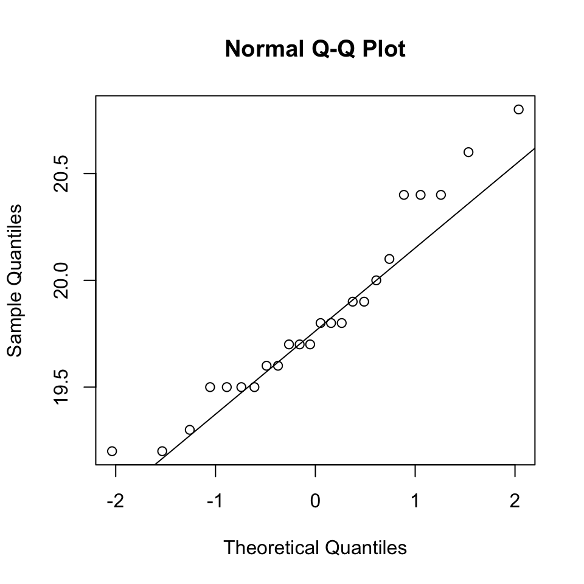

dissolution = c(19.5,19.7,19.7,20.4,19.2,19.5,19.6,20.8,19.9,
19.2,20.1,19.8,20.4,19.8,19.6,19.5,19.3,19.7,
19.5,20.6,20.4,19.9,20.0,19.8)
qqnorm(dissolution)
qqline(dissolution)
mean(dissolution) = 19.8291667mean(dissolution) = 19.8291667t.test(dissolution, mu=20, alternative = "less", conf.level = 0.99)##
## One Sample t-test
##
## data: dissolution
## t = -1.9379, df = 23, p-value = 0.0325
## alternative hypothesis: true mean is less than 20
## 99 percent confidence interval:
## -Inf 20.04954
## sample estimates:
## mean of x
## 19.82917time = c(28,25,27,31,10,26,30,15,55,12,24,32,28,42,38)
t.test(time, mu=25, alternative = "greater")##
## One Sample t-test
##
## data: time
## t = 1.0833, df = 14, p-value = 0.1485
## alternative hypothesis: true mean is greater than 25
## 95 percent confidence interval:
## 22.99721 Inf
## sample estimates:
## mean of x
## 28.2capacities = c(23,19,36,12,41,43,19,28,14,44,15,46,36,25,
35,25,29,17,51,33,47,42,45,23,29,18,14,48,
21,49,27,39,44,18,13)
CI95 = t.test(capacities)$conf.int
CI95## [1] 26.26906 34.75951
## attr(,"conf.level")
## [1] 0.95CI99 = t.test(capacities, conf.level=0.99)$conf.int
CI99## [1] 24.81485 36.21372
## attr(,"conf.level")
## [1] 0.99